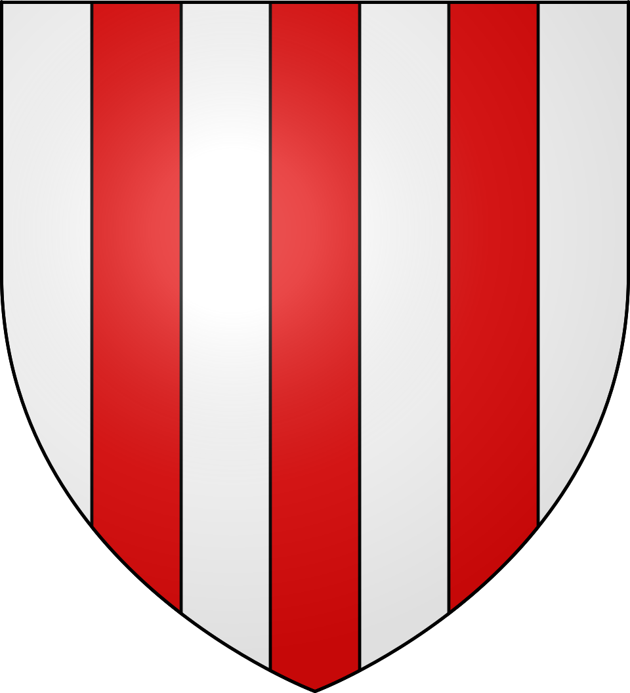
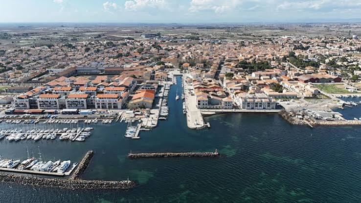
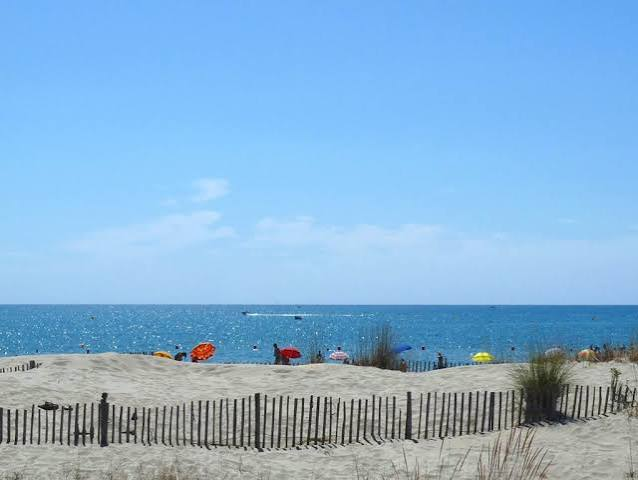

Marseillan
Port & Vignobles


⟹ Port · Vigne · Étang & Méditerranée ⟸

Un emplacement stratégique entre lagune et Méditerranée. Marseillan s’est développé à l’extrémité occidentale de l’étang de Thau, là où se rencontrent les voies terrestres, la navigation lagunaire et l’accès vers la mer. Cette situation explique l’ancienneté des échanges et la permanence des activités liées à la pêche, au sel, à la vigne et au commerce.
Des occupations anciennes. Comme l’ensemble du bassin de Thau, le territoire a été fréquenté dès la Protohistoire puis intégré aux réseaux commerciaux méditerranéens développés par les populations grecques installées à Agde. Les campagnes voisines sont progressivement mises en culture, notamment pour la vigne, tandis que l’étang fournit poissons, coquillages et voies de circulation.
Le Moyen Âge : une communauté sous l’autorité de l’évêque d’Agde. Marseillan dépend longtemps de la seigneurie de l’évêque-comte d’Agde. Malgré les périodes d’insécurité — guerres, épidémies, brigandages et aléas climatiques — la communauté se structure et obtient très tôt des libertés municipales. Les habitants acquièrent notamment le droit d’élire des consuls chargés d’administrer les affaires locales, tradition qui nourrit durablement une forte culture civique.
Un bourg fortifié et commerçant. Le cœur ancien se développe autour de rues étroites, d’édifices religieux et d’espaces publics protégés. La proximité de l’étang permet le transport de marchandises entre les villages riverains, Agde et Sète. Les productions agricoles de l’arrière-pays trouvent là un débouché naturel.

Le canal du Midi et l’ouverture vers de nouveaux marchés. L’aménagement du canal du Midi à la fin du XVIIe siècle et sa connexion avec l’étang renforcent la place stratégique du bassin de Thau. Marseillan se situe au contact de cette grande voie d’eau reliant Atlantique et Méditerranée. Le trafic fluvial et lagunaire stimule progressivement l’activité portuaire et commerciale.
Le XVIIIe siècle : affirmation viticole. Les terres de la commune sont de plus en plus consacrées à la vigne. Le vin devient un produit central de l’économie locale. Le port facilite son expédition tandis que se développent les métiers de la tonnellerie, du négoce et de la distillation.
1813 et l’histoire de Noilly Prat. Le nom de Marseillan est indissociable du vermouth Noilly Prat. La maison, dont l’histoire débute au début du XIXe siècle, établit ses chais dans le port de Marseillan et y développe un procédé original de vieillissement des vins en plein air avant assemblage avec plantes et épices. Les vastes chais deviennent l’un des emblèmes du patrimoine économique local.
XIXe siècle : l’âge d’or de la vigne et du port. La vigne recouvre alors une grande partie du territoire communal. Le port connaît une activité intense : chargement et expédition des vins, arrivée de marchandises, tonnellerie, distilleries et fabriques de spiritueux. La prospérité viticole transforme l’architecture : grandes caves aux portails élevés, demeures de négociants, maisons vigneronnes et façades bourgeoises donnent à la ville une grande partie de son visage actuel.
Une forte tradition républicaine. Au XIXe siècle, Marseillan s’affirme aussi politiquement. La commune se distingue par son attachement à la République. En 1878, elle figure parmi les premières villes françaises à ériger une représentation de Marianne sur une place publique, symbole particulièrement fort dans le contexte politique de la jeune Troisième République.
Crises viticoles et mutations. Comme tout le Languedoc, Marseillan connaît les conséquences du phylloxéra, de la surproduction et des crises du vin. La monoculture viticole, source de richesse, rend l’économie vulnérable. Le XXe siècle voit donc se diversifier les activités, même si la vigne reste une composante majeure du paysage et de l’identité locale.
La mer, la plage et le tourisme. La façade méditerranéenne, longtemps plus sauvage que le cœur historique, accueille progressivement des équipements touristiques. Marseillan-Plage se développe au XXe siècle avec les congés payés, le camping, les résidences de vacances et les activités balnéaires. La commune possède dès lors une double identité : le vieux port sur Thau et la station littorale ouverte sur la Méditerranée.

Des traditions nautiques toujours vivantes. Les joutes languedociennes, le jeu du Capelet, la pêche, la plaisance et les fêtes de port rappellent la place centrale de l’eau dans la culture marseillanaise. La conchyliculture, présente sur l’étang de Thau, complète aujourd’hui les activités viticoles et touristiques.
Marseillan aujourd’hui : un patrimoine composite. La ville conserve un ensemble remarquable où se superposent le bourg ancien, le port viticole, les chais, le canal, la lagune, les vignobles et la station balnéaire. Cette combinaison explique une identité locale particulièrement forte, à la fois languedocienne, maritime, viticole et républicaine.
Repères : Moyen Âge, affirmation d’une communauté consulaire · fin du XVIIe siècle, nouvel élan lié au canal du Midi · 1813, histoire de la maison Noilly Prat · XIXe siècle, apogée viticole et portuaire · 1878, Marianne républicaine · XXe siècle, développement de Marseillan-Plage et diversification économique.
Chronologie synthétique de Marseillan